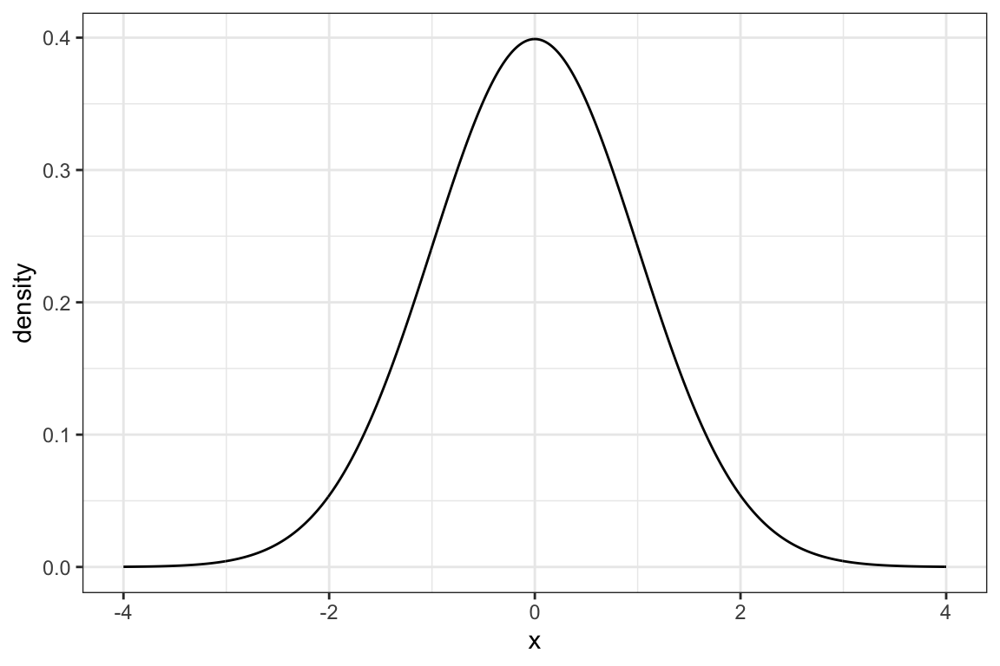
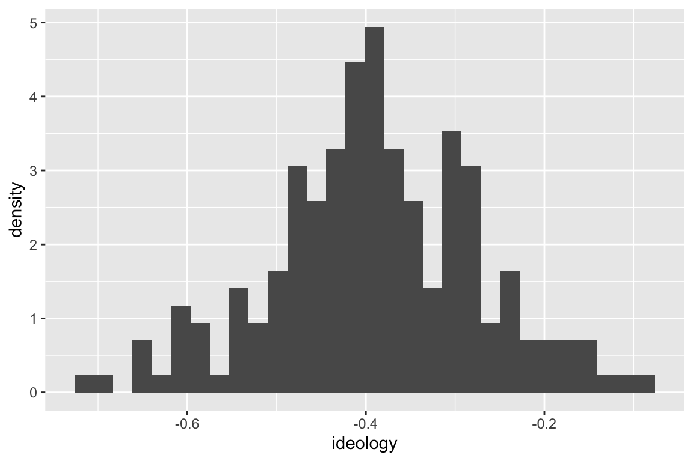
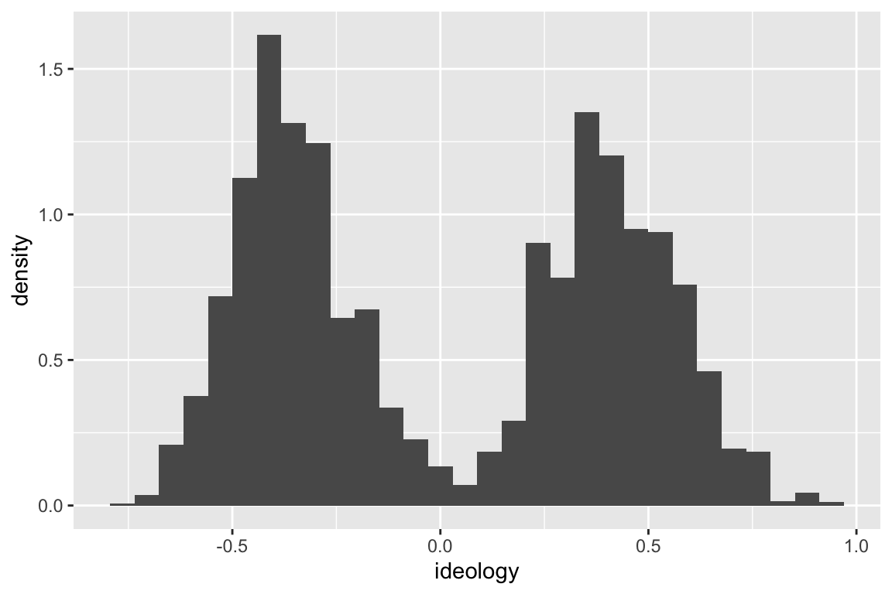
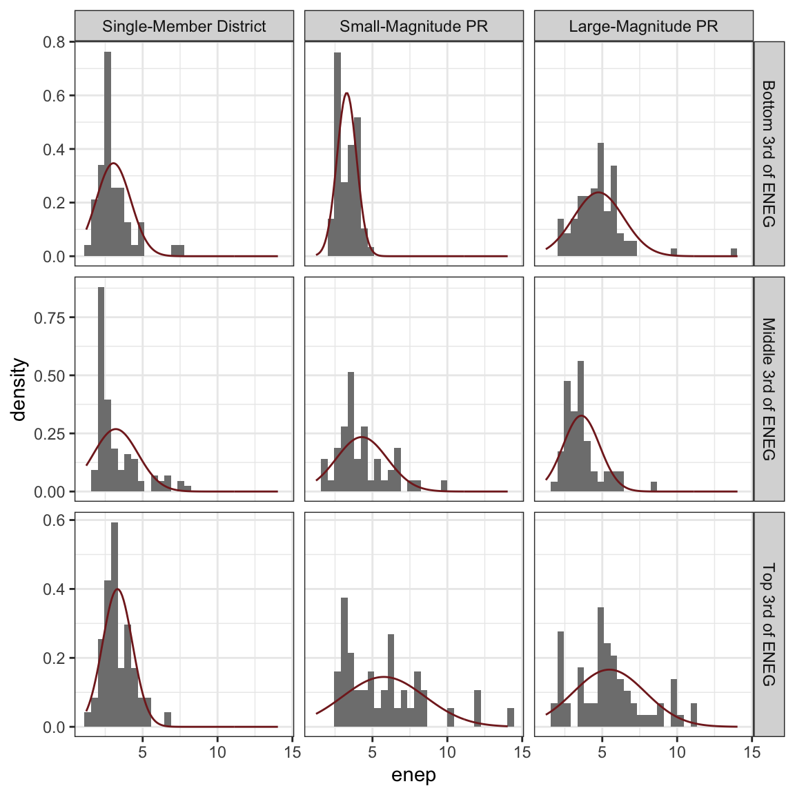
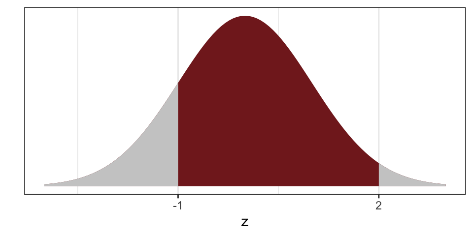
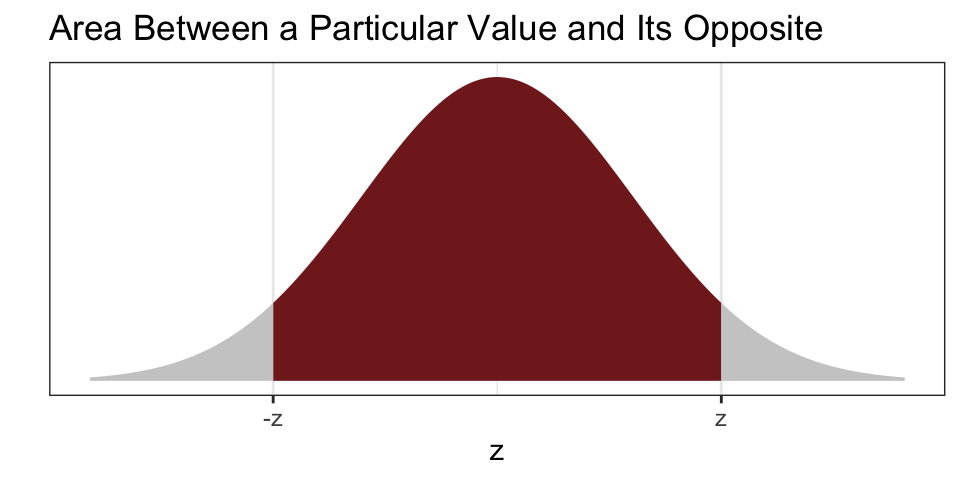
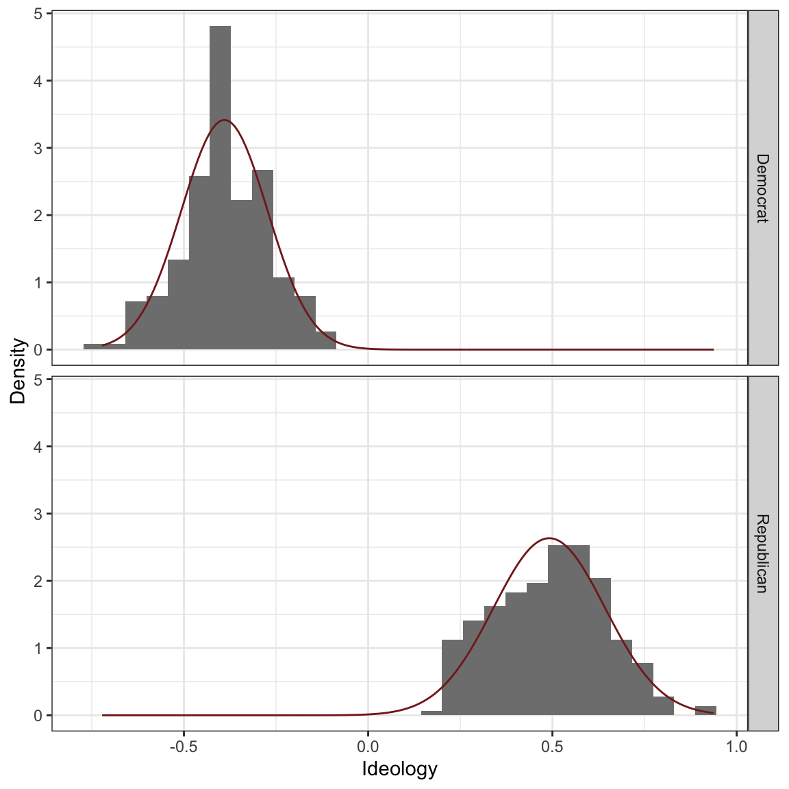
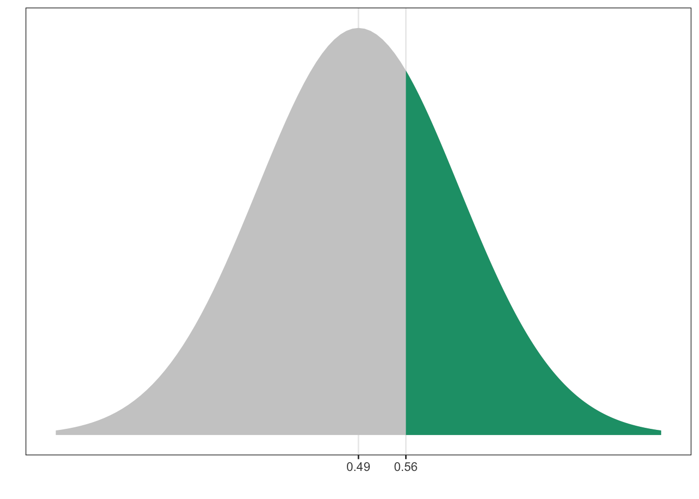
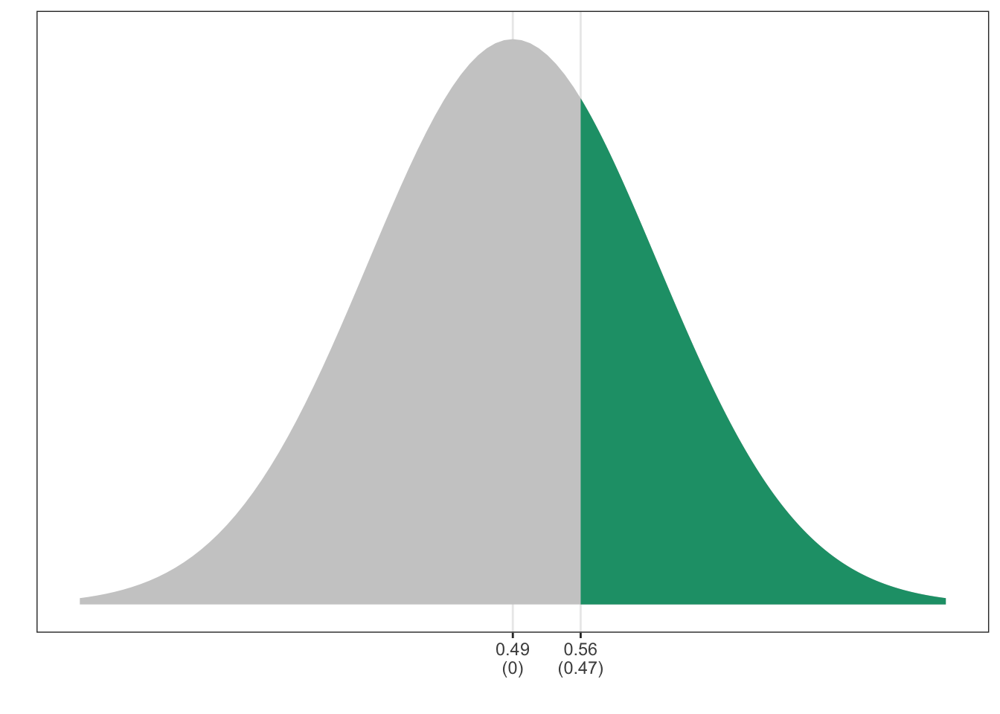
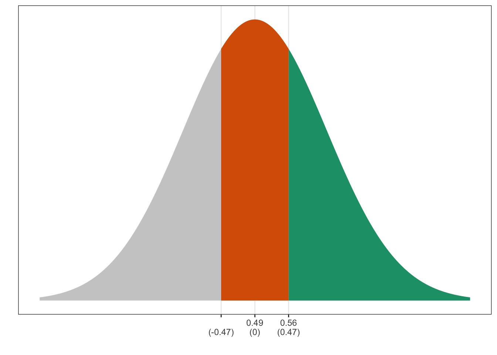

Chapter 7 The Normal Model
7.1 The Intuition
Last week, we used the average and SD to reduce an entire variable to two summaries. We use the average and SD to fill in the following sentence: “The values are about ________, give or take ________ or so.”
This week, we add an additional assumption. This week, we also say that the histogram of the variable follows the normal curve.
The normal curve is a bell-shaped curve with the particular equation \(f(x) = \frac{1}{{\sqrt {2\pi } }}e^\frac{{ - x ^2 }}{2}\). The details of the equation are not important. It is important, though, to realize that the normal curve is an exact, precise shape. It is not a vague description.
Nonetheless, a lot of numeric variables have histograms that roughly follow the normal curve. If the histogram of a variable is approximately “bell-shaped,” then we can use the normal curve as an approximate description of the histogram.

7.2 Examples
It turns out that many variable’s have a histogram that resembles the normal curve. Because of this, the normal curve can sometimes serve as an effective model for these variables.
For example, NOMINATE ideology scores for Republicans in the 115th Congress roughly follow the normal curve.

However, the ideology scores for both Republicans and Democrats together does not follow a normal curve.

Below are histograms of the ENEP (effective number of electoral political parties) by electoral system type and and the amount social heterogeneity. I overlaid rescaled version of the normal curve to assess how closely the histogram matches the normal curve. Notice that these deviate slightly from the normal curve. “Bell-shaped” is perhaps a small stretch, but not too far off.

7.3 The Empirical Rule
If the variable roughly follows the normal curve (or is “bell-shaped”), then we have the following two rules:
- About 68% of the data (i.e., “most”) fall within 1 SD of the average.
- About 95% of the data (i.e., “almost all”) fall within 2 SDs of the average.
We can evaluate this rule with the parties data above. Some of the nine hisgrams follow the normal curve quite well (e.g., lower-left). Others seem to meaningfully deviate from the normal curve (e.g., middle-left).
The table below shows the actual percent of the variable that falls within one and two SDs of the average for each histogram. As you can see, for the lower-left panel (SMD, Top 3rd), the empircal rule of 68% and 95% matches the actual values of 74% and 98% fairly well. For the middle-left panel (SMD, Middle 3rd), the empirical rule matches the actual values of 87% and 93% less well.
Across all histograms, it seems fair that the empirical rule works as a rough approximation, even for histograms that do not follow the normal-curve closely.
| Electoral System | Social Heterogeneity | within 1 SD | within 2 SDs |
|---|---|---|---|
| Single-Member District | Bottom 3rd of ENEG | 87% | 96% |
| Single-Member District | Middle 3rd of ENEG | 87% | 93% |
| Single-Member District | Top 3rd of ENEG | 74% | 98% |
| Small-Magnitude PR | Bottom 3rd of ENEG | 68% | 97% |
| Small-Magnitude PR | Middle 3rd of ENEG | 73% | 96% |
| Small-Magnitude PR | Top 3rd of ENEG | 76% | 93% |
| Large-Magnitude PR | Bottom 3rd of ENEG | 80% | 98% |
| Large-Magnitude PR | Middle 3rd of ENEG | 77% | 96% |
| Large-Magnitude PR | Top 3rd of ENEG | 65% | 97% |
7.4 The Normal Approximation
If the histogram roughly follows the normal curve, then we can use the normal curve as a model to estimate the percent of the observations that fall in a given range. Just like we add up the area of the bars to compute percentages with a histogram, we add up the area under the normal curve to approximate percentages.
For example, to find the percent of the data between -1 and +2 in the histogram below, we simply need to find the area of the red shape.

7.5 The Normal Table
Unfortunately, the normal curve isn’t a collection of rectangles like a histogram. In this case, we need some understanding of integral calculus and a computer.
Fortunately, we can use a simple of areas-under-the-curve without worrying about calculus.
But there’s a problem: Histograms of variables can have different averages and different SDs. The normal curve only works for a variable with an average of zero and and SD of one.
But there’s a simple solution: We can easily convert to standard units or z-scores to link a histogram with any average and SD to the normal curve. To convert to standard units or z-scores, We simply subtract the average and divide by the SD.
\(z\text{-score} = \dfrac{\text{value} - \text{average}}{\text{SD}}\)
Suppose we have the list \(X = \{1, 2, 3, 4, 5\}\). Then the average is 3, and the SD is about 1.41. We can compute the zscore for the first entry 1 as \(\frac{1 - 3}{1.42} \approx -1.42\). Similarly, we can convert the entire list to z-scores and get \(Z = \{-1.42, -0.71, 0.00, 0.71, 1.42\}\). If you compute the average and SD of the list \(Z\), you will find zero and one, respectively.
These \(z\)-scores have a nice interpretation: They tell you the number of SDs a value falls above (or below) the average. For example, a \(z\)-score of 1.5 corresponds to a value 1.5 SDs above the average. A \(z\)-score of -2.2 refers to a value 2.2 SDs below the average.
So long as we convert to standard units, we can use a normal table to compute any areas of interest under the normal curve.
As an example, the small table below reports the percent of the normal curve between a particular value \(z\) and \(-z\) (i.e., the area “in the middle”). (The normal table on p. A-104 of FPP works the same way. There’s a more complete normal table as an appendix to these notes.)

| z | % between -z and z | Status |
|---|---|---|
| 0.00 | 0% | |
| 0.10 | 8% | |
| 0.20 | 16% | |
| 0.30 | 24% | |
| 0.40 | 31% | |
| 0.50 | 38% | |
| 0.75 | 55% | |
| 1.00 | 68% | Important |
| 1.50 | 87% | |
| 1.64 | 90% | |
| 1.96 | 95% | Important |
| 2.00 | 95% | Important |
| 3.00 | 100% |
7.6 Using a Normal Approximation
To do a normal approximation, follow these steps:
- Draw a picture. This is really important. If you can draw the correct picture, it’s really easy to find the correct approximation.
- Draw the normal curve.
- Label the points of interest. I find it helpful to label the average as well.
- Shade the area of interest.
- Convert the points of interest to z-scores. I like to add the z-scores in parentheses underneath the points of interest.
- Use the Rules of the Normal Curve.
- The normal table gives the area between \(z\) and its opposite \(-z\). See FPP A-104 or the appendix in these notes. Usually start here.
- The area under the entire curve is 100%.
- The curve is symmetric, so that the area above a particular value \(z\) equals the area below its opposite \(-z\).
Let’s see an example.
7.7 Example: The Extremity of Party Leaders
To illustrate the normal approximation, let’s use it to estimate the percent of each party more extreme than their leaders during the 115th Congress.
The histograms below show the ideology of legislators by party.

The table below shows the average and SD by party.
| Party | Average | SD |
|---|---|---|
| Democrat | -0.39 | 0.12 |
| Republican | 0.49 | 0.15 |
The table below lists some of the leaders of each party and their ideology score. For each party leader, we can use two approaches approaches to quickly estimate the percent of the party that is “more extreme” than their leader: inspect the histogram and use the normal approximation.
| Name | Party | Position | Ideology Score | Inspect Histogram | Normal Approximation | Actual |
|---|---|---|---|---|---|---|
| RYAN, Paul D. | Republican | Speaker of the House | 0.56 | |||
| MCCARTHY, Kevin | Republican | Majority Leader | 0.46 | |||
| SCALISE, Steve | Republican | Majority Whip | 0.56 | |||
| McMORRIS RODGERS, Cathy | Republican | Conference Chair | 0.43 | |||
| PELOSI, Nancy | Democrat | Minority Leader | -0.49 | |||
| HOYER, Steny Hamilton | Democrat | Minority Whip | -0.38 | |||
| CLYBURN, James Enos | Democrat | Assistant Democratic Leader | -0.46 | |||
| LEWIS, John R. | Democrat | Senior Chief Deputy Minority Whip | -0.59 |
Let’s start with Paul Ryan. First, his ideology score is 0.56 (more conservative than the average for his party). A quick glance at the histogram for Republicans suggests that about 40% of Republicans are more extreme (more conservative) than Paul Ryan.
Since this histogram roughly follows the normal curve, we can get an even more precise estimate using the normal approximation. First, convert Paul Ryan’s ideology score to standard units. We get \(z = \frac{0.56 - 0.49}{0.15} \approx 0.47\). This means that Paul Ryan is about 0.47 SDs more conservative than average.
To find the percent more extreme than Paul Ryan, start by drawing a picture. Draw the normal curve, add the points of interest, and shade the area of interest.

Next, convert the points of interest to z-scores. The average always becomes zero and 0.56 becomes \(\frac{0.56-0.49}{0.15} = 0.47\).

Finally, use the rules. It’s usually best to start with the normal table, so let’s look up 0.47. There’s no z = 0.47, so just choose the closest, which is z = 0.45. According to the table, the percent between -0.45 and 0.45 is 34.73% or 35%. This is shown in orange below.

If the orange piece “in the middle” is 35%, then there’s 65% left over in two tails together (green plus grey). Notice, though, that these two tails are symmetric and therefore equal. Then each tail has 65%/2 or about 33%.
Therefore, the green area–the area of interest–is about 33%. This means that about 33% of Republican legislators are more extreme than Paul Ryan.